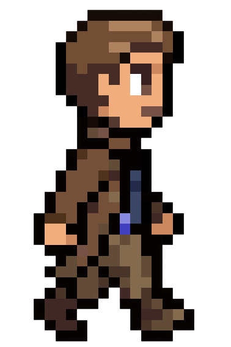
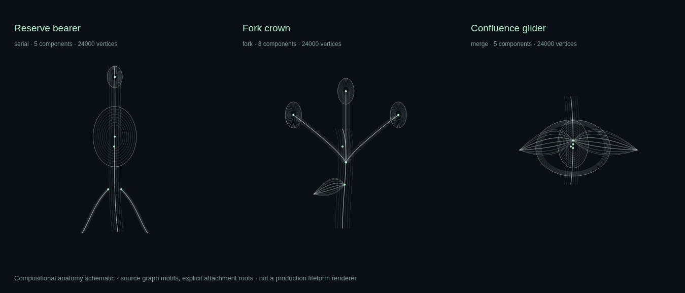
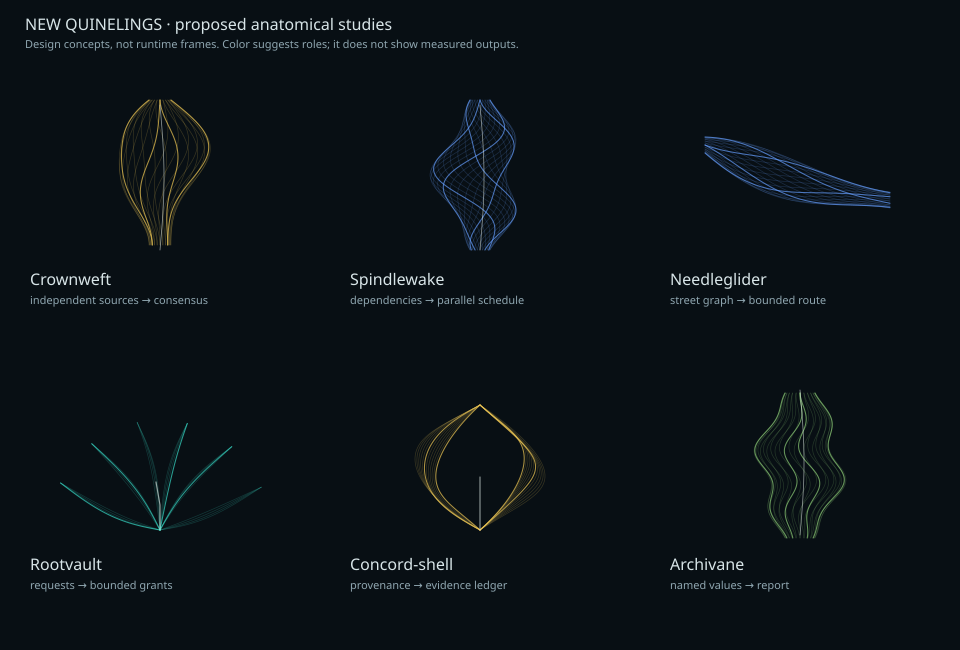

Thought takes form.
A useful program. A distinctive body. A gesture that belongs to it.
Ten specialist design reviews. These are proposed language extensions and isolated research prototypes; automatic free-text compilation and production anatomy integration remain to be built.

Inspect the executable task graph
{
"version": 1,
"name": "Rooftop planter reserve steward",
"nodes": [
{
"id": "water",
"op": "literal",
"inputs": [],
"params": {
"value": 9
}
},
{
"id": "beds",
"op": "literal",
"inputs": [],
"params": {
"value": [
{
"id": "fern",
"amount": 4,
"active": true
},
{
"id": "moss",
"amount": 5,
"active": false
},
{
"id": "sage",
"amount": 7,
"active": true
}
]
}
},
{
"id": "eligible",
"op": "filter",
"inputs": [
"beds"
],
"params": {
"key": "active",
"operator": "eq",
"value": true
}
},
{
"id": "grants",
"op": "allocate",
"inputs": [
"water",
"eligible"
],
"params": {}
},
{
"id": "reserve",
"op": "get",
"inputs": [
"grants"
],
"params": {
"path": "remaining"
}
},
{
"id": "count",
"op": "length",
"inputs": [
"eligible"
],
"params": {}
},
{
"id": "ledger",
"op": "report",
"inputs": [
"grants",
"reserve",
"count"
],
"params": {
"labels": [
"allocation",
"reserve",
"eligibleBeds"
]
}
}
],
"outputs": [
"ledger"
]
}Inspect the independently specified task result
[
{
"allocation": {
"grants": [
{
"id": "fern",
"requested": 4,
"granted": 4
},
{
"id": "sage",
"requested": 7,
"granted": 5
}
],
"remaining": 0
},
"reserve": 0,
"eligibleBeds": 2
}
]New bodies, assembled from anatomy.
Spines, chambers, fins, loops, and explicit attachment sockets form new organisms. The skeletal tree is separate from the program’s dependency graph. Each operation retains a declared owner.

These three structural studies demonstrate composition. Their appearance is schematic; the production renderer does not yet accept this grammar.
One gesture, many connected tissues.
Preparation, stroke, recovery, and rest replace uniform oscillation. The isolated preview demonstrates shared socket motion and deterministic phase seeking.
A visual language for beautiful individuals.
A dominant body, restrained luminous crests, clear negative space, and attached subordinate tissue. Program topology supplies meaningful traits; a bounded authored seed supplies variation.

Art direction concepts, not executed programs or recorded measurement colors.
Mathematical contracts
Closed smooth gesture scores, shared root transforms, regular geometric primitives, stable material coordinates, and explicit resource budgets.
Meaning stays inspectable
Thought clauses link to task operations and material owners. Unsupported and ambiguous requests retain visible obligations. Watching never dispatches an action.
Read the design
Integrated architecture and implementation sequence · QDL integration review · Evaluation and acceptance gates